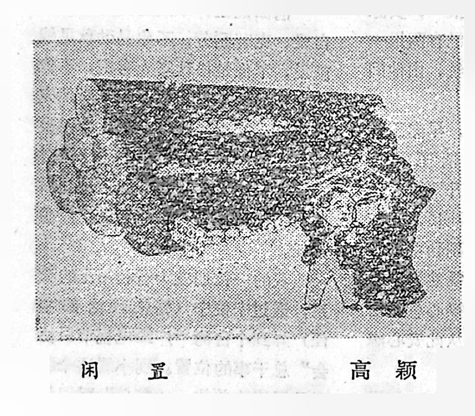

高颖 《人事》1985年第2期（总第2期），第46页
闲置
Lying Idle
- Description
- A coarse halftone reproduction: a large dark mass fills most of the frame, with a small figure crouched beneath its lower right edge. The details cannot be made out in the scan.
- Note
- 闲置 (“left idle”) was the usual term for trained people and equipment left unused.
- Artist
- Gao Ying 高颖
- Published in
- 《人事》1985年第2期（总第2期）, p. 46
- Themes
- Talent and its neglect

Cite
Gao Ying, “闲置” [Lying Idle], Renshi (Personnel) 《人事》, 1985, no. 2, p. 46.